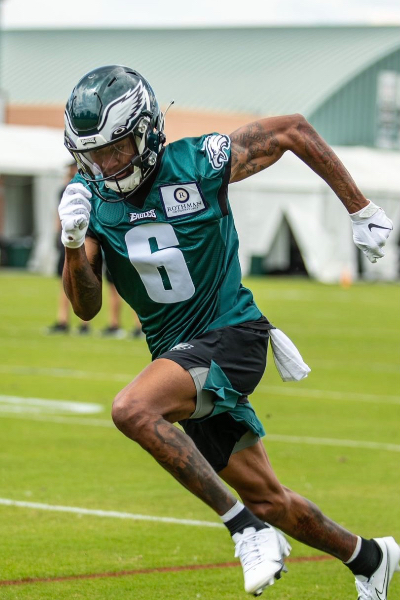
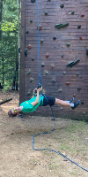
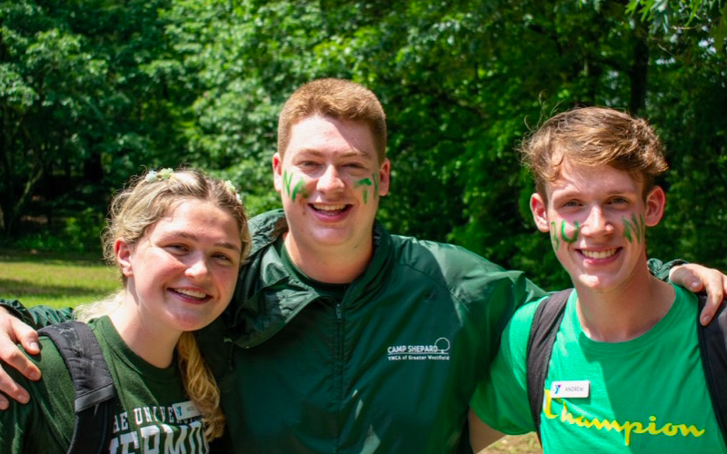

Hi! My name is Andrew Bilodeau and I'm a Computer Science Major at the University of Rhode Island. My hometown is Westfield, MA which is about two hours
from here. In my free time I like to hang out with friends, play games and watch shows, and relax with my dog, Buster. I also am an avid Philadelphia Eagles fan and I'm sure you'll see plenty
of that on this page! During the summer I work as a ropes elements director at Camp Shepard, a summer camp I've been going to since I was 6!
|  |  |  |
|---|